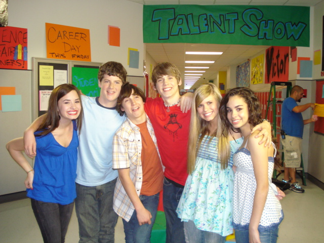
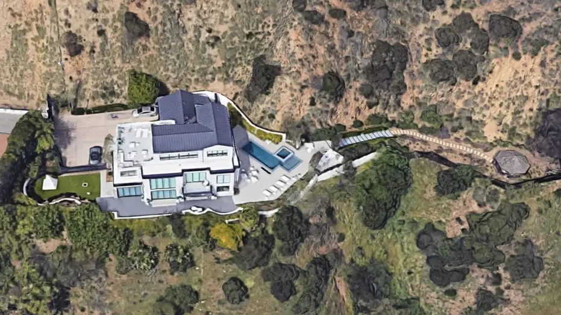

Demi lovato
Devonne "Demi" Lovato (Albuquerque, 20 de agosto de 1992) é uma cantora, compositora e atriz norte-americana. Após participar do programa de televisão infantil Barney & Friends (2002–2004), ela estrelou a minissérie do Disney Channel As the Bell Rings (2007–2008).
Lovato alcançou o estrelato ao interpretar Mitchie Torres no filme musical para televisão Camp Rock (2008) e sua sequência Camp Rock 2: The Final Jam (2010). A trilha sonora doprimeiro apresentou a canção "This Is Me", seu primeiro single e dueto, que alcançou a nona posição da Billboard Hot 100.
Depois de assinar com a Hollywood Records, Lovato lançou seu álbum de estreia Don't Forget (2008), que estreou na segunda posição da Billboard 200.
Seu sucessor, Here We Go Again (2009), estreou no topo da tabela estadunidense, enquanto sua faixa-título atingiu a 15ª colocação da Hot 100. Seu terceiro álbum de estúdio, Unbroken (2011), experimentou com pop e R&B e produziu o single "Skyscraper".
Entre 1 de junho e 31 de julho de 2008, Lovato realizou quinze apresentações em sua primeira turnê, a Demi Live! Warm Up. Também abriu a turnê Burnin' Up para os Jonas Brothers Em 12 de agosto de 2008, Lovato lançou seu primeiro single solo inédito, "Get Back", que obteve a posição #43 na Billboard Hot 100. Pouco mais de um mês depois, em 23 de setembro, seu entre julho e setembro de 2008. A turnê foi filmada e lançada como um filme, Jonas Brothers: The 3D Concert Experience, em 27 de fevereiro de 2009, com Demi interpretando a si. álbum de estreia Don't Forget também foi liberado.
Demetria Devonne Lovato, popular pelo nome profissional Demi Lovato, nasceu na cidade norte-americana de Albuquerque, Novo México, a 20 de agosto de 1992, sendo descendente de Dianna Bonheur Hart De La Garza e Patrick Lovato, que se separaram em 1994. Após o divórcio, Demi se mudou para Dallas, no Texas, juntamente com sua mãe e irmã mais velha, Dallas Lovato, tendo mais tarde uma meia-irmã mais nova por parte de mãe, Madison De La Garza.A mãe de Demi foi uma das Dallas Cowboys Cheerleaders e gravou música country. Lovato tem ascendência mexicana por parte de pai (com ascendência espanhola e indígena)e inglesa e irlandesa por parte de mãe.Finalizou a escola secundária em abril de 2009.
Lovato iniciou a sua carreira aos nove anos de idade, interpretando Angela na série de televisão infantil Barney e seus amigos,entre a sexta e oitava temporadas. Em 2006, fez uma participação especial no episódio "First Down", da segunda temporada da série Prison Break, como Danielle Curtin Também apareceu na segunda temporada do sitcom Just Jordan, como Nicole, no episódio de 2007, "Slippery When Wet". A Disney, descobriu Demi através de uma seleção feita anualmente em diferentes partes dos Estados Unidos, inclusive na cidade onde morava, Dallas. A microssérie As the Bell Rings seria gravada no Texas e a equipe lhe escolheu para atuar como uma das personagens principais, Charlotte Adams. Segundo Judy Taylor, diretora de elenco, esse tipo de programa é uma "ótima forma de se lançar alguém ou dar-lhe alguma experiência técnica real e ver como se sai". As the Bell Rings estreou em 26 de agosto de 2007; algumas de suas canções originais, como "Shadow", foram incluídas no programa. De acordo com o desempenho, eles decidiram "[manter Demi] em mente na temporada de pilotos". Devonne "Demi" Lovato (Albuquerque, 20 de agosto de 1992) é uma cantora, compositora e atriz norte-americana. Após participar do programa de televisão infantil Barney & Friends (2002–2004), ela estrelou a minissérie do Disney Channel As the Bell Rings (2007–2008).

Características musicais
Influências e estilo:
Demi afirmou que gosta de heavy metal, especialmente black metal e metalcore, citando a banda de black metal sinfônico Dimmu Borgir como "um de seus artistas favoritos ao vivo". Lovato falou que a música era sua primeira paixão, "por que veio muito naturalmente", completando que "interpretar tem sido como um hobby". Em seu primeiro álbum, Don't Forget, seu som pop rock e power pop foi comparado ao da banda Jonas Brothers, principalmente devido ao fato dos membros terem tido participação na composição e produção do disco. Demi descreveu Kelly Clarkson como sua "inspiração desde que tinha dez anos de idade" e disse que o álbum seria como "uma mistura do som [de Clarkson] e Paramore". Citou também Christina Aguilera, Aretha Franklin e Gladys Knight como influências. Sobre Aretha, Lovato comentou que, apesar de sua música "não necessariamente soar como a dela, há algumas canções em que eu realmente coloco bastante coração e alma, e ela me inspirou de verdade".
Filantropia
Demi é participante das campanhas Teens Agains Bullying e STOMP Out Bullying, que têm como objetivo combater o bullying nas escolas. Também esteve no America's Next Top Model e no Newsroom do CNN, para discutir sobre o assunto. Demi também se apresentou no Concert for Hope, realizado em 25 de outubro de 2009 em Los Angeles - com o objetivo de ajudar crianças com câncer.[253] Foram cantadas canções de seus dois álbuns de estúdio, como "Don't Forget","Remember December" e "Catch Me". Em dezembro de 2009, participou de uma campanha de final de ano em benefício da Starlight Children's Foundation, que ajuda na educação e entretenimento de crianças com doenças graves. Lovato, assim como outros artistas, projetou uma camisa, que foi colocada à venda e seu lucro revertido para a fundação. As vendas da camisa desenhada por Lovato foram declaradas bem-sucedidas.Demi também fez parte da gravação de um vídeo para a campanha I Am the Country, para ajudar as vítimas do terremoto em 2010 no Chile.
Vida Pessoal
Em 20 de agosto de 2010, seu aniversário de 18 anos, Demi comprou uma casa de estilo mediterrâneo em Los Angeles para sua família.Em setembro de 2016, ela também comprou uma casa em Laurel Canyon em Los Angeles por US$ 8,3 milhões, que ela vendeu em junho de 2020 por US$ 8,25 milhões. Em setembro de 2020, Demi comprou uma casa em Studio City em Los Angeles por US$ 7 milhões.
